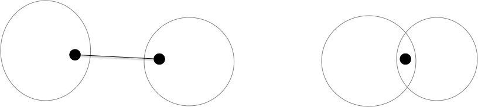

Caractérisation des graphes planaires
Preuve d'un théorème de Jordan simplifié
TBD suffisant pour les graphes où les sommets sont dénombrables. TBD si courbe alors polygone alors droites TBD Diesel théorème 4.1.1 (p83 et suivantes) TBD https://minerve.ens-rennes.fr/images/Le_Théorème_de_Jordan_S.Quayle_V.Le_Gruiec..pdf TBD - topologie et courbe fermée Jordan : https://pagesperso.g-scop.grenoble-inp.fr/~lazarusf/Enseignement/graphesPlans.pdf
Mineurs
La caractérisation des graphes planaire se fait par "mineur exclu". C'est à dire caractériser les graphes qui vont nous empêcher de réussir un dessin planaire
Définition
Soit $G$ un graphe. Un graphe $H$ est un mineur de $G$ s'il peut être obtenu par un nombre quelconque des opérations suivantes :
- suppression d'un sommet sans voisin
- suppression d'une arête
- contraction d'un arête: on fusionne l'arête en un nouveau sommet $z$ dont les voisins sont les voisins des anciens sommets formant l'arête
En deux mots, les mineurs sont les graphes cachés dans un graphe plus gros :

La notion de mineur rend compte de l'intrication locale de chemins entre sommets. Ils ont donné lieu à un des plus joli théorème de théorie des graphes (et pourtant il y en a !), le théorème de Roberston-Seymour. Ce théorème indique en effet que :
- toute famille close par mineur peut être caractérisée par un nombre fini de mineurs exclu,
- Quelque soit le graphe $M$, il existe un algorithme en $\mathcal{O}(n^2)$ pour savoir si un graphe $G$ admet $M$ comme mineur.
En revanche, le théorème ne caractérise pas les algorithmes et ils ont une constante multiplicatives exponentielle en la taille du mineur à rechercher. Il n'est donc pas utilisé en pratique, mais la planarité fait partie de ces familles puisque :
Proposition
Si est $G$ un graphe planaire alors tous ses mineurs le sont aussi.
preuve
preuve
Les trois opérations pour créer un mineur d'un graphe fonctionnent aussi sur son dessin :
- la suppression d'un sommet ou d'une arête ok
- la contraction d'un arête se fait en concaténant les courbes des arêtes supprimées, comme sur le dessin ci dessous.

Caractérisation
On a déjà établi la proposition suivante :
Proposition
Si $G$ est planaire, il ne peut avoir ni $K_5$ ni $K_{3,3}$ comme mineur
preuve
preuve
Clair puisque l'on a montré que :
- ni $K_5$ ni $K_{3,3}$ ne peuvent être planaire,
- un graphe n'est planaire que si ses mineurs le sont.
Il nous reste à faire la réciproque. Initialement faire par Kuratowski en 1930 dans le cadre des subdivisions de graphes, il a été ré-ecrit par Wagner en 1937 avec les mineurs.
Voir la page Wikipedia
On va avoir besoin de quelques propriétés des graphes 2-connexes pour cette démonstration, donc commençons par ça.
2-connexité
Définition
Un graphe est dit $k$-connexe si la suppression d'un ensemble quelconque de $k-1$ de ses sommets ne déconnecte pas $G$.
On appelle connectivité de $G$ et la note $\kappa(G)$, le plus grand $k$ tel que $G$ soit $k$-connexe.
Par exemple :
- un chemin est 1-connexe, si on supprime un sommet qui n'est pas une de ses extrémités on le déconnecte,
- un cycle est 2-connexe puisque supprimer un de ses sommets le transforme en chemin.
La $k$-connexité est bien une généralisation directe de la connexité puisqu'un graphe est connexe si et seulement si il est $1$-connexe.
Montrez que le degré d'un sommet d'un graphe $k$-connexe est forcément supérieur au égal à $k$
corrigé
corrigé
S'il existait un sommet avec un degré strictement plus petit que $k$, supprimer tous ses voisin le déconnecterait du reste du graphe ce qui est impossible pour un graphe $k$-connexe.
Nous aurons uniquement besoin ici de la 2-connexité et de cette propriété en particulier :
Proposition
Soit $G$ un graphe 2-connexe de strictement plus de 2 sommets. Quels que soient $u \neq v$ deux de ses sommets, il existe un cycle élémentaire dans $G$ passant par $u$ et $v$.
preuve
preuve
Le graphe étant connexe, il existe un chemin élémentaire entre $u$ et $v$. Notons le $u = x_1\dots x_p = v$.
Soit $x_i$ le plus grand $i\geq 1$ tel qu'il existe un cycle élémentaire contenant $x_1\dots x_i$. On a $1 < i \leq p$ car le graphe est 2-connexe, il existe donc un chemin $u = y_1\dots y_q = v$ entre $u$ et $v$ dans le graphe privé de $x_1$. En notant $y_j$ le premier élément de ce chemin qui soit dans l'ensemble $\{x_2, \dots x_p\}$ (comme $y_q = v$, $y_j$ existe), disons $y_j = x_k$, on a un cycle élémentaire $x_1\dots x_k y_{j-1} \dots y_1$.
Si $i=p$ on a gagné, donc on peut supposer sans perte de généralité que $1< i < p$. Notez que ce cycle ne peut contenir de sommets du chemin $x_{i+1}\dots x_p$
En supprimant $x_i$ du graphe, il reste connexe et donc il existe un chemin entre $u$ et $v$. Dans ce chemin considérons le plus grand élément, disons $w$, qui fait parti du cycle et $x_j$ le premier élément après $w$ qui fait parti du chemin $x_{i+1}\dots x_p$. Comme $v=x_p$, $w$ et $x_j$ existent. Or la portion de chemin entre $w$ et $x_j$ ne contient aucun élément ni du cycle ni du chemin $x_{i+1}\dots x_p$. On peut donc construire un cycle élémentaire entre $u$ et $x_j$ en allant de $u$ à $w$ puis de de $w$ à $x_j$ et en revenant à $u$ par $x_i$ et l'autre bout du cycle :

Comme $j>i$ on a une contradiction.
Tout comme un graphe peut se décomposer en composantes connexes, on peut le décomposer en ses composantes 2-connexes
Définition
Un ensemble de sommet d'un graphe est 2-connexe si la restriction du graphe à cet ensemble est 2-connexe.
Définition
Un ensemble de sommets d'un graphe est une composante 2-connexe si :
- il est 2-connexe,
- il est maximal pour l'inclusion
Proposition
Si $A$ et $B$ sont deux composantes 2-connexes d'un graphe connexe $G$, on a soit :
- $A \cap B = \emptyset$ et il existe au plus un unique couple $(x, y) \in A \times B$ tel que $xy \in E(G)$
- $\vert A \cap B \vert = 1$ et $xy \notin E(G)$ quelque soient $x \in A \backslash B$ et $y \in B \backslash A$
preuve
preuve
Comme $A$ et $B$ sont maximaux on peut supposer sans perte de généralité que $A \subsetneq A \cup B$. De là, si $\vert A \cap B \vert > 1$ alors $A \cup B$ serait connexe et supprimer n'importe quel élément de $A \cup B$ ne déconnecterait le graphe : $A$ n'est pas maximal ce qui est impossible.
Le même raisonnement s'applique ($A\cup B$ serait 2-connexe) :
- si $A \cap B = \emptyset$ et qu'il existait $x_1 \neq x_2$ tous deux dans $A$ avec chacun une arête vers un élément (pouvant être le même) de $B$
- si $\vert A \cap B \vert = 1$ et qu'il existait $x \in A \backslash B$ et $y \in B \backslash A$ avec $xy \in E(G)$.
Corollaire
Pour toute arête $xy$ d'un graphe il existe une unique composante 2-connexe contenant à la fois $x$ et $y$.
preuve
preuve
Comme $\{x, y\}$ est 2-connexe si $xy \in E(G)$ il fait partie d'une composante 2-connexe et la proposition précédente permet de conclure.
Définition
On appelle nœud d'articulation d'un graphe les sommets à l'intersection de deux composantes 2-connexes.
Proposition
Soit $G$ un graphe connexe et $\mathcal{C}$ l'ensemble de ses composantes 2-connexes.
Le graphe $G' = (\mathcal{C}, E)$ tel que $xy$ est une arête si $x\cap y \neq \emptyset$ est un arbre.
preuve
preuve
Tout d'abord le graphe $G'$ est connexe. En effet si $A$ et $B$ sont deux composantes 2-connexe et $x \in A$, $y \in B$ alors il existe un chemin entre $x$ et $y$ dans $G$ et chaque arête est dans une composante connexe. cette succession de composantes connexe forme un chemin dans $G'$.
De plus ce graphe est sans cycle car sinon le cycle dans $G'$ induirait un cycle dans $G$ dont les arêtes appartiendraient aux composantes 2-connexes du cycle de $G'$. Mais un cycle fait partie d'une unique composante 2-connexe ce qui est une contradiction puisque celle-ci aurait au moins 2 sommets en commun avec tous les éléments du cycle.
Trouver les composantes 2-connexes d'un graphe peut se faire linéairement en utilisant un DFS astucieux. C'est l'algorithme de Hopcroft et Tarjan (1973).
TBD exemple du cours
Preuve
TBD la démo.
Les deux démonstrations sont
- relation d'équivalence entre arêtes donne les composantes 2-connexes e R f si e = f ou s'il existe un cycle élémentaire contenant e et f
- composantes 2-connexes
TBD composantes 2-connexes ~ arbre : il existe feuille.
Proposition
Si $G$ est planaire si et seulement si ses composantes 2-connexes le sont
preuve
preuve
TBD après effeuillage, on reconstruit le graphe en ajoutant une composante 2-connexe à la fois à un graphe de plus en plus gros, via un seul sommet d'articulation. On dessine la nouvelle composante connexe avec ce sommet d'articulation sur la face extérieure (on a vu qu'on peut toujours le faire) et on le recolle dans une face du graphe d'origine contenant le sommet.
TBD exemple Les composantes 2-connexes sont liées uniquement par un sommet d'articulation ou une arêtes.

Le graphe dont les sommet sont les composantes 2-connexe et une arête si connexion est un arbre (sinon il existe un cycle et du coup plus gros)
TBD preuve Kuratowski juste avec 2-connexité: https://www.math.cmu.edu/~mradclif/teaching/228F16/Kuratowski.pdf
- définitions et propriétés + Kuratowsky : https://perso.ens-lyon.fr/eric.thierry/Graphes2009/theophile-trunck.pdf ou https://perso.ens-lyon.fr/eric.thierry/Graphes2007/vincent-nivoliers.pdf On a besoin de :